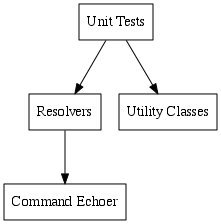

3. Architecture¶
3.1. Production¶
The main components of ONEDrive when in regular operation.
![digraph G {
ranksep = .75;
size = "7,20";
dpi = 72;
node [shape = box];
"ONEDrive" -> "FUSE Callbacks"
"ONEDrive" -> "Dependency Checker"
"FUSE Driver" -> "FUSE Callbacks"
"FUSE Callbacks" -> Cache
"FUSE Callbacks" -> Resolvers
"Utility Classes" -> Resolvers
"Resolvers" -> "Command Processor"
"Command Processor" -> "Solr Client"
"Command Processor" -> "DataONE Client"
}
/*
subgraph cluster0 {
node [style=filled, color=white];
style=filled;
color=lightgrey;
label = "Utility Classes";
"Directory"
"FacetPathParser"
"Filename Extensions"
"PathException"
"QueryEngineDescription"
"Resolver ABC"
"Settings"
}
*/](_images/graphviz-134f55bdae817fc790b56b41f32249ecd1523def.png)
The utility classes include Directory, FacetPathParser, PathException, Filename Extensions, QueryEngineDescription, ResolverABC, Settings.
3.2. Testing and Debugging¶
The main components of ONEDrive when testing and debugging.

When testing and debugging, the FUSE specific classes are replaced by the unit testing framework. Also, Command Processor is replaced with Command Echoer, a component that simply echoes the commands back instead of returning actual results. The unit tests for the resolvers compare the echoed commands with the commands that were expected to be issued for a given path.
One consequence of this is that the FUSE related classes and the Command Processor are not tested. There is almost no code in the FUSE related classes and what is there is linear in nature and is fully tested for each time the drive is mounted and a path is opened. The Command Processor contains more logic but is hard to test reliably since it interacts with databases that change over time.
This layout facilitates TDD, as the unit tests can be run quickly, with reproducible results.
3.3. Resolvers¶
The resolvers are classes that “resolve” filesystem paths to lists of files and folders for those paths. The resolvers are arranged into a hierarchy. Each resolver examines the path and may resolve the path itself and/or pass control to another resolver. If a resolver does both, its list of files and folders appears above the ones provided by resolvers deeper in the hierarchy.
Resolvers deeper in the hierarchy corresponds to sections that are further to the right in the path. If a resolver passes control to another resolver, it first removes the section of the left side of the path that it processed. Thus, each resolver needs to know only how to parse the section of the path that it is designed to handle. This also enables the same functionality to be exposed several places in the filesystem. For instance, the resolver for the object package level can be reached though each of the root level search types.
If a resolver determines that the path that it has received is invalid, it can abort processing of the path by raising a PathException. The resolver stores a brief error message in the exception. The exception is caught by the Root resolver, which renders it as a file in the ONEDrive filesystem, using the error message as the filename.
3.3.1. The hierarchy of resolvers¶
![digraph G {
ranksep = .75;
size = "7,20";
dpi = 72;
node [shape = box];
{
rank = same;
Root;
}
{
rank = same;
"Preconfigured Search";
}
{
rank = same;
"Faceted Search Selector";
"Flat Space";
Status;
}
{
rank = same;
"Faceted Search";
}
{
rank = same;
"DataONE Object";
}
{
rank = same;
Package;
}
{
rank = same;
"Science Object";
}
Root -> "Faceted Search Selector";
Root -> "Preconfigured Search";
Root -> "Flat Space";
Root -> Status
"Faceted Search Selector" -> "DataONE Object";
"Faceted Search Selector" -> "Faceted Search";
"Preconfigured Search" -> "Faceted Search Selector"
"Flat Space" -> "DataONE Object";
Status -> "Coordinating Nodes";
Status -> "Member Nodes";
"Faceted Search" -> "DataONE Object";
"DataONE Object" -> Package
"DataONE Object" -> "Science Object"
Package -> "Science Object"
Package -> "System Metadata"
"Science Object" -> "System Metadata"
"Science Object" -> "Science Metadata"
"Science Object" -> "Science Data"
}](_images/graphviz-99936c8349eec440fb1db02ae1e744676e9564c8.png)
3.3.2. Notes¶
The resolvers are all derived from ResolverABC, not from each other.
Each resolver has two public methods, get_attributes() and get_directory(). get_attributes() returns the attributes for a file or folder. get_directory() returns the directory contents for a folder.
The Root resolver renders the root directory, which contains a set of directories designating different types of interactions which can be performed with the DataONE infrastructure. It also parses the root elements of paths and transfers control to the appropriate path resolver.
All the resolvers handle paths as lists of path segments. The root resolver performs the conversion of the path string to a list of path segments by splitting the path on the path separator and unescaping the segments. This allows the path segments to contain DataONE identifiers that include the path separator and simplifies path handling in the resolvers.
The Faceted Search Selector exists so that faceted search can be turned off once a specific object has been selected. In other words, the path:
/FacetedSearch/@facet1/#value1/@facet2/#value2/mydataonepid/science_object.jpg
does not cause a faceted search to be performed even though one is included. The user has already found and selected an object, so the Faceted Search Selector just strips the faceted search section off the path and passes control to Package. This eliminates superfluous searches. It also causes the path to remain valid even if the specified object stops matching the facets in the future.
Faceted Search also appears under Preconfigured Search. This enables the user to specify preconfigured searches for various classes of objects of interest while still enabling the user to use faceted search to further narrow down the results from the preconfigured searches.
Flat Space enables direct access to objects and enables users to share short ONEDrive paths to directly access specific objects.
DataONE Object determines what type of object has been selected and calls a resolver that is appropriate for the type. Currently, regular science objects and packages are supported.
Package renders the contents of a OAI-ORE Resource Map.
The Status hierarchy is not implemented. It’s just an indication of how other DataONE related information can be exposed in the filesystem.
3.3.3. The Root resolver¶
As an example of the pattern that the resolvers follow, consider the Root resolver. The Root resolver is responsible for rendering the root directory, /, and for dispatching paths out to the other resolvers. Only the root folder is handled by the Root resolver.
get_attributes("/"): Return the attributes for / (0 size, directory).
get_attributes("/FacetedSearch"): Not handled by the Root resolver. The Root resolver strips off /FacetedSearch, and passes the remaining path, / to the FacetedSearch resolver. So, even though /FacetedSearch is returned by get_directory("/") (see below) of the Root resolver, that same path is not handled by the Root resolver.
get_attributes("/FacetedSearch/some/other/path"): Same as get_attributes("/FacetedSearch"), except that the path passed to the FacetedSearch resolver is now /some/other/path.
get_attributes("/invalid"): This invalid path is handled by the Root resolver, which returns the attributes for a folder, that get_directory("/invalid") will populate with an error message.
get_directory("/"): Return directories for all of the valid 1st level resolvers, such as FacetedSearch.
get_directory("/FacetedSearch"): Not handled by the Root resolver. As with the equivalent get_attributes() call, the path is actually the root for the FacetedSearch resolver.
get_directory("/FacetedSearch/some/other/path"): Same as get_directory("/FacetedSearch"), except that the path passed to the FacetedSearch is now /some/other/path.
get_directory("/invalid"): Because the corresponding get_attributes() call returned this as a valid folder, the Root resolver now has the chance to handle the folder and will use it for returning an error message as a folder that contains a single file, where the name of the file is the error message.
3.4. Command processor¶
To retrieve lists of files and folders for display in the filesystem, the resolvers issue commands to the Command processor. The Command processor transforms the commands into one or more queries against the DataONE Solr index and the DataONE infrastructure and wraps up the results.
3.5. Path representation¶
Only the driver specific part of ONEDrive handles paths as strings. The bulk of the code handles paths as lists of path elements. The elements are strings or Unicode. They do not contain any escaped characters. The elements may contain characters that have special meaning in the filesystem, such as the path separator character (“/” on *nix). If so, these characters do NOT have the special meaning that they would have in a normal path string. When joining the segments together to a path string, the special characters would be escaped.
Normally, when splitting the root path, “/”, one ends up with a list of two empty strings. The first empty string shows that the path is absolute (starting at root), and the second that there is nothing after root. In ONEDrive, all paths represented as lists of path segments are assumed to be rooted, so the first, empty, element is removed.
3.6. Searching in the ONEDrive filesystem¶
Currently, a recursive search in the ONEDrive filesystem, such as with the “find” command in Unix, will cause Solr queries to be performed against the CN for each possible permutation of facet names and values. There is an “infinite” number of permutations, so this process will never finish.
If a recursive search that also examines file contents is performed, ONEDrive will in addition attempt to download all objects in DataONE.
It may be necessary to add a system to detect this type of search in ONEDrive and abort the process.
3.7. Callbacks¶
The FUSE callbacks and how these are handled.
3.7.1. getattr()¶
getattr() gets called on any path that the user attempts to access and any path that has previously been returned by readdir(). getattr() returns information, such as size, date and type, for a single item. In ONEDrive, the type of an item is either a file or a folder.
ONEDrive handles getattr() calls as follows:
- The keys in the attribute cache are searched for a match to the path. If a match is found, the attributes for the file or folder are returned.
- If the path was not found in the cache, get_attributes() is called in the root resolver. The resolver hierarchy will always return valid attributes due to the way error messages are returned by ONEDrive.
- getattr() caches the result, then returns it.
3.7.2. readdir()¶
readdir() is only called for folders. It returns the names of items in a folder. It does not return any other information, such as the type of the item. FUSE calls getattr() for each of the items returned by readdir() to get their type, size and other information.
FUSE assumes that the root, “/”, is a folder, so getattr() is not called for the root before readdir() is called on the root. This is the only exception to the general pattern of interactions between getattr() and readdir().
By calling getattr() and readdir() in a cyclic pattern, FUSE recursively discovers the folder tree in the filesystem, the contents of the folders, and the sizes of both files and folders.
FUSE only calls readdir() on folders that were previously designated as folders and valid paths by getattr().
ONEDrive handles readdir() calls as follows:
- The keys in the directory cache (see readdir()) are searched for a match to the path. If a match is found, the names of the contents for the folder are returned.
- get_directory() in the root resolver is called. Because get_attributes() will designate invalid paths as folders, get_directory() will also be called with those invalid paths. This is for the purpose of returning error messages. So, get_directory() will never return a filesystem error. It may, however, return folders containing error information. The error information will be one of two types. The first type is in response to an invalid path and the second is for internal errors, such as a failure in querying Solr.
- readdir() caches the result in the directory cache and returns it to FUSE.
3.8. Returning error messages¶
Because ONEDrive applies semantics to sections of paths, it is useful to be able to provide error messages that are more descriptive than the errors usually provided by filesystems, such as “No such file or directory”. The infrastructure that the operating system provides for filesystems does not include a way to return free text error messages, as errors are returned as predefined error codes. To work around this, ONEDrive renders an error as a folder which contains a single file, where the name of the file is the error message. This works as follows:
For all paths except the root, discovery of the filesystem structure that is provided by ONEDrive starts by a call to getattr(). In a normal filesystem, without semantics in the path, the initial call to getattr() would directly return an error code if the path was not valid. The error code would be resolved to an error message and displayed to the user, for instance as a popup message. In ONEDrive, the error message is not returned as an error code. Instead, getattr() returns a stat structure telling FUSE and the OS that the requested (invalid) path is a valid folder. FUSE will then call back into ONEDrive via the readdir() callback to get the contents of the directory. ONEDrive then returns, as the contents of that directory, a single file, which filename is the error message.
In a later version of ONEDrive, this mechanism can be expanded so that the error message file can be opened to provide further details about the error and suggestions on how to proceed.
3.9. Debugging¶
When first mounting ONEDrive, the filesystem will be hit with various automated requests in order for the OS to learn about the filesystem. This causes trouble when debugging. On Ubuntu, the automated requests can be disabled temporarily by killing the gvfs processes:
$ sudo pkill -9 -f gvfs